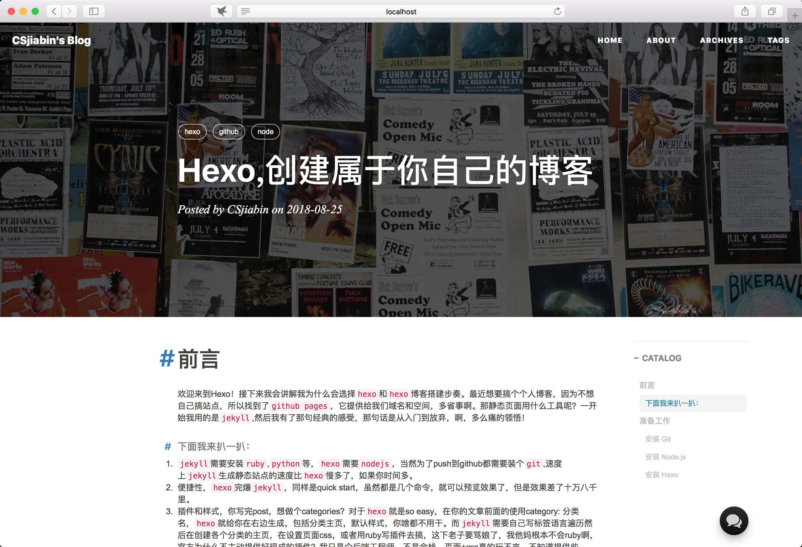

<!DOCTYPE html><html lang="en"><head><meta charset="utf-8"><meta http-equiv="X-UA-Compatible" content="IE=edge"><meta name="google-site-verification" content="Xk9YWz2-rBE9P5__qdWz3nUr4zb9bIDSdANHpezjB04"><meta name="baidu-site-verification" content="aifbHeRmzy"><meta name="viewport" content="width=device-width,minimum-scale=1,initial-scale=1"><meta name="description" content="Goals determine what you going to be!!"><meta name="keyword" content="hjb, csjiabin, csjiabin Blog, 黄佳滨的博客, huangjiabin, 黄佳滨, html, css, javascript, js, JavaScript, Node, node, nodejs, h5, html5, 小程序, vue"><title>Hexo,创建属于你自己的博客 - CSjiabin的博客 | CSjiabin&#39;s Blog</title><link rel="canonical" href="https://csjiabin.github.io"><link rel="manifest" href="/hux/pwa/manifest.json"><link rel="shortcut icon" href="/hux/img/favicon.ico"><link rel="apple-touch-icon" href="/hux/img/apple-touch-icon.png"><link rel="stylesheet" href="/hux/css/bootstrap.min.css"><link rel="stylesheet" href="/hux/css/hux-blog.min.css"><link rel="stylesheet" href="/hux/css/highlight.css"><link rel="stylesheet" href="/hux/css/rocket.css"><link rel="stylesheet" href="/hux/css/signature.css"><link rel="stylesheet" href="/hux/css/toc.css"><link rel="stylesheet" type="text/css" href="https://c.mipcdn.com/static/v1/mip.css"><link href="//cdnjs.cloudflare.com/ajax/libs/font-awesome/4.6.3/css/font-awesome.min.css" rel="stylesheet" type="text/css"> <!--[if lt IE 9]><script src="https://oss.maxcdn.com/libs/html5shiv/3.7.0/html5shiv.js"></script><script src="https://oss.maxcdn.com/libs/respond.js/1.4.2/respond.min.js"></script><![endif]--><script>!function(e,t,o,c,i,d,a){e.DaoVoiceObject=i,e[i]=e[i]||function(){(e[i].q=e[i].q||[]).push(arguments)},e[i].l=1*new Date,d=t.createElement(o),a=t.getElementsByTagName(o)[0],d.async=1,d.src=c,d.charset="utf-8",a.parentNode.insertBefore(d,a)}(window,document,"script",("https:"==document.location.protocol?"https:":"http:")+"//widget.daovoice.io/widget/bdc5c12d.js","daovoice"),daovoice("init",{app_id:"bdc5c12d"}),daovoice("update")</script><script></script></head><body ontouchstart=""><style type="text/css">header.intro-header{background-image:url(/hux/img/home-bg.jpg)}#signature{background-image:url(/hux/img/signature/white.png)}</style><link rel="stylesheet" href="/hux/css/post-style.css"><header class="intro-header"><div id="signature"><div class="container"><div class="row"><div class="col-lg-8 col-lg-offset-2 col-md-10 col-md-offset-1"><div class="post-heading"><div class="tags"> <a class="tag" href="/hux/tags/#hexo" title="hexo">hexo</a> <a class="tag" href="/hux/tags/#github" title="github">github</a> <a class="tag" href="/hux/tags/#node" title="node">node</a></div><h1>Hexo,创建属于你自己的博客</h1><h2 class="subheading"></h2> <span class="meta">Posted by CSjiabin on 2018-08-16</span></div></div></div></div></div></header><nav class="navbar navbar-default navbar-custom navbar-fixed-top"><div class="container-fluid"><div class="navbar-header page-scroll"> <button type="button" class="navbar-toggle"> <span class="sr-only">Toggle navigation</span><span class="icon-bar"></span><span class="icon-bar"></span><span class="icon-bar"></span></button> <a class="navbar-brand" href="/hux/">CSjiabin&#39;s Blog</a></div><div id="huxblog_navbar"><div class="navbar-collapse"><ul class="nav navbar-nav navbar-right"><li> <a href="/hux/">Home</a></li><li> <a href="/hux/about/">About</a></li><li> <a href="/hux/archives/">Archives</a></li><li> <a href="/hux/tags/">Tags</a></li></ul></div></div></div></nav><script>var $body=document.body,$toggle=document.querySelector(".navbar-toggle"),$navbar=document.querySelector("#huxblog_navbar"),$collapse=document.querySelector(".navbar-collapse");function handleMagic(e){0<$navbar.className.indexOf("in")?($navbar.className=" ",setTimeout(function(){$navbar.className.indexOf("in")<0&&($collapse.style.height="0px")},400)):($collapse.style.height="auto",$navbar.className+=" in")}$toggle.addEventListener("click",handleMagic)</script><article><div class="container"><div class="row"><div class="col-lg-8 col-lg-offset-2 col-md-10 col-md-offset-1 post-container"><h1> <span id="前言">前言</span></h1><p>欢迎来到Hexo！该文章非常适合不懂前端的人搭建自己的博客，接下来我会讲解我为什么会选择<code>hexo</code>和<code>hexo</code>博客搭建步奏。最近想要搞个个人博客，因为不想自己搞站点，所以找到了<code>github pages</code>，它提供给我们域名和空间，多省事啊。那静态页面用什么工具呢？一开始我用的是<code>jekyll</code>,然后我有了那句经典的感受，那句话是从入门到放弃，啊，多么痛的领悟！</p><h6> <span id="下面我来扒一扒">下面我来扒一扒：</span></h6><ol><li><code>jekyll</code>需要安装<code>ruby</code>,<code>python</code>等，<code>hexo</code>需要<code>nodejs</code>，当然为了push到github都需要装个<code>git</code>,速度上<code>jekyll</code>生成静态站点的速度比<code>hexo</code>慢多了，如果你时间多。</li><li>便捷性，<code>hexo</code>完爆<code>jekyll</code>，同样是quick start，虽然都是几个命令，就可以预览效果了，但是效果差了十万八千里。</li><li>插件和样式，你写完post，想做个categories？对于<code>hexo</code>就是so easy，在你的文章前面的使用category: 分类名，<code>hexo</code>就给你在右边生成，包括分类主页，默认样式，你啥都不用干。而<code>jekyll</code>需要自己写标签语言遍历然后在创建各个分类的主页，在设置页面css，或者用ruby写插件去搞，这下老子要骂娘了，我他妈根本不会ruby啊，官方为什么不主动提供好现成的插件？我只是个后端工程师，不是全栈，页面+css真的玩不来，不知道提供些theme供人选择？</li></ol><blockquote><p>废话不多说，接下来会以我的博客为例子搭建一个hexo的giahub pages！</p></blockquote><h3> <span id="hexo相关命令总结">Hexo相关命令总结</span></h3><figure class="highlight shell"><table><tr><td class="gutter"><pre><span class="line">1</span><br><span class="line">2</span><br><span class="line">3</span><br><span class="line">4</span><br><span class="line">5</span><br><span class="line">6</span><br><span class="line">7</span><br><span class="line">8</span><br><span class="line">9</span><br><span class="line">10</span><br><span class="line">11</span><br><span class="line">12</span><br><span class="line">13</span><br><span class="line">14</span><br><span class="line">15</span><br><span class="line">16</span><br><span class="line">17</span><br></pre></td><td class="code"><pre><span class="line"><span class="meta">$</span><span class="bash"> hexo init <span class="comment">#初始化一个项目</span></span></span><br><span class="line"></span><br><span class="line"><span class="meta">$</span><span class="bash"> hexo new page <span class="string">"xxx"</span> <span class="comment">#生成页面</span></span></span><br><span class="line"></span><br><span class="line"><span class="meta">$</span><span class="bash"> hexo new <span class="string">""</span> <span class="comment">#生成文章</span></span></span><br><span class="line"></span><br><span class="line"><span class="meta">$</span><span class="bash"> hexo clean <span class="comment">#清除缓存</span></span></span><br><span class="line"></span><br><span class="line"><span class="meta">$</span><span class="bash"> hexo s  <span class="comment">#启动本地服务</span></span></span><br><span class="line"></span><br><span class="line"><span class="meta">$</span><span class="bash"> hexo g  <span class="comment">#保存修改，生成文件</span></span></span><br><span class="line"></span><br><span class="line"><span class="meta">$</span><span class="bash"> hexo d  <span class="comment">#发布到远程</span></span></span><br><span class="line"></span><br><span class="line"><span class="meta">$</span><span class="bash"> npm install --save xxx  <span class="comment">#安装插件</span></span></span><br><span class="line"></span><br><span class="line"><span class="meta">$</span><span class="bash"> npm unstall xxx <span class="comment">#卸载插件</span></span></span><br></pre></td></tr></table></figure><p>上述命令将贯穿于整个博客过程，不难，能动手尽量别复制粘贴</p><h3> <span id="准备工作">准备工作</span></h3><p>安装 Hexo 相当简单。然而在安装前，您必须检查电脑中是否已安装下列应用程序：</p><ul><li><a href="http://nodejs.org/" target="_blank" rel="noopener">Node.js</a></li><li><a href="http://git-scm.com/" target="_blank" rel="noopener">Git</a></li></ul><p>如果您的电脑中已经安装上述必备程序，那么恭喜您！接下来只需要使用 npm 即可完成 Hexo 的安装。</p><figure class="highlight shell"><table><tr><td class="gutter"><pre><span class="line">1</span><br></pre></td><td class="code"><pre><span class="line"><span class="meta">$</span><span class="bash"> npm install -g hexo-cli</span></span><br></pre></td></tr></table></figure><p>如果您的电脑中尚未安装所需要的程序，请根据以下安装指示完成安装。</p><h4> <span id="安装-git">安装 Git</span></h4><ul><li>Windows：下载并安装 <a href="https://git-scm.com/download/win" target="_blank" rel="noopener">git</a>.</li><li>Mac：使用 <a href="http://mxcl.github.com/homebrew/" target="_blank" rel="noopener">Homebrew</a>, <a href="http://www.macports.org/" target="_blank" rel="noopener">MacPorts</a> ：<code>brew install git</code>;或下载 <a href="http://sourceforge.net/projects/git-osx-installer/" target="_blank" rel="noopener">安装程序</a> 安装。</li><li>Linux (Ubuntu, Debian)：<code>sudo apt-get install git-core</code></li><li>Linux (Fedora, Red Hat, CentOS)：<code>sudo yum install git-core</code></li></ul><h4> <span id="安装-nodejs">安装 Node.js</span></h4><p>安装 Node.js 的最佳方式是使用 <a href="https://github.com/creationix/nvm" target="_blank" rel="noopener">nvm</a>。</p><p>cURL:</p><figure class="highlight shell"><table><tr><td class="gutter"><pre><span class="line">1</span><br></pre></td><td class="code"><pre><span class="line"><span class="meta">$</span><span class="bash"> curl https://raw.github.com/creationix/nvm/master/install.sh | sh</span></span><br></pre></td></tr></table></figure><p>Wget:</p><figure class="highlight shell"><table><tr><td class="gutter"><pre><span class="line">1</span><br></pre></td><td class="code"><pre><span class="line"><span class="meta">$</span><span class="bash"> wget -qO- https://raw.github.com/creationix/nvm/master/install.sh | sh</span></span><br></pre></td></tr></table></figure><p>安装完成后，重启终端并执行下列命令即可安装 Node.js。</p><figure class="highlight shell"><table><tr><td class="gutter"><pre><span class="line">1</span><br></pre></td><td class="code"><pre><span class="line"><span class="meta">$</span><span class="bash"> nvm install stable</span></span><br></pre></td></tr></table></figure><p>或者您也可以下载 <a href="http://nodejs.org/" target="_blank" rel="noopener">安装程序</a> 来安装。</p><blockquote><p><strong>Windows 用户</strong><br> 对于windows用户来说，建议使用安装程序进行安装。安装时，请勾选<strong>Add to PATH</strong>选项。<br> 另外，您也可以使用<strong>Git Bash</strong>，这是git for windows自带的一组程序，提供了Linux风格的shell，在该环境下，您可以直接用上面提到的命令来安装Node.js。打开它的方法很简单，在任意位置单击右键，选择“Git Bash Here”即可。由于Hexo的很多操作都涉及到命令行，您可以考虑始终使用<strong>Git Bash</strong>来进行操作。</p></blockquote><h4> <span id="安装-hexo">安装 Hexo</span></h4><p>所有必备的应用程序安装完成后，即可使用 npm 安装 Hexo。</p><figure class="highlight shell"><table><tr><td class="gutter"><pre><span class="line">1</span><br></pre></td><td class="code"><pre><span class="line"><span class="meta">$</span><span class="bash"> npm install -g hexo-cli</span></span><br></pre></td></tr></table></figure><h3> <span id="用法">用法</span></h3><p>在这里以我的博客主题为例子(也可以按hexo官方文档进行搭建)，移植的主题 <a href="https://github.com/Huxpro/huxpro.github.io" target="_blank" rel="noopener">Hux Blog</a>，我为了您的方便而发布整个项目，因此您只需按照下面的说明操作，即可轻松自定义您自己的博客！ 让我们开始！！！<br> </p><h4> <span id="初始化">初始化</span></h4><figure class="highlight shell"><table><tr><td class="gutter"><pre><span class="line">1</span><br><span class="line">2</span><br><span class="line">3</span><br></pre></td><td class="code"><pre><span class="line"><span class="meta">$</span><span class="bash"> git <span class="built_in">clone</span> https://github.com/csjiabin/hexo-theme-hux.git</span></span><br><span class="line"><span class="meta">$</span><span class="bash"> <span class="built_in">cd</span> hexo-theme-hux</span></span><br><span class="line"><span class="meta">$</span><span class="bash"> npm install</span></span><br></pre></td></tr></table></figure><h4> <span id="站点配置">站点配置</span></h4><p>你可以通用修改 <code>_config.yml</code> 文件来轻松的开始搭建自己的博客:</p><figure class="highlight yml"><table><tr><td class="gutter"><pre><span class="line">1</span><br><span class="line">2</span><br><span class="line">3</span><br><span class="line">4</span><br><span class="line">5</span><br><span class="line">6</span><br><span class="line">7</span><br><span class="line">8</span><br><span class="line">9</span><br><span class="line">10</span><br><span class="line">11</span><br><span class="line">12</span><br><span class="line">13</span><br><span class="line">14</span><br><span class="line">15</span><br></pre></td><td class="code"><pre><span class="line"><span class="attr">title:</span> <span class="string">xxx</span>  <span class="comment"># 博客名，站点名称 </span></span><br><span class="line"><span class="attr">author:</span> <span class="string">xxx</span> <span class="comment"># 博客作者名字 #</span></span><br><span class="line"><span class="attr">description:</span> <span class="string">xxx</span> <span class="comment"># 对站点的描述，搜索引擎会抓取，可以自定义</span></span><br><span class="line"><span class="attr">keyword:</span> <span class="string">xxx</span> <span class="comment"># 向搜索引擎说明你的网页的关键词</span></span><br><span class="line"><span class="attr">theme:</span> <span class="string">huxblog</span> <span class="comment"># themes目录下的主题目录</span></span><br><span class="line"></span><br><span class="line"><span class="comment"># 您可以决定是否显示侧边栏</span></span><br><span class="line"><span class="comment"># Sidebar settings</span></span><br><span class="line"><span class="attr">sidebar:</span> <span class="literal">true</span>  <span class="comment"># whether or not using Sidebar.</span></span><br><span class="line"><span class="attr">sidebar-about-description:</span> <span class="string">"Goals determine what you going to be!!"</span></span><br><span class="line"><span class="attr">sidebar-avatar:</span> <span class="attr">https://avatars1.githubusercontent.com/u/20592953?s=460&amp;v=4</span>   <span class="comment"># use absolute URL, seeing it's used in both `/` and `/about/</span></span><br><span class="line"></span><br><span class="line"><span class="comment"># 您可以决定是否显示帖子标签。</span></span><br><span class="line"><span class="comment"># Featured Tags</span></span><br><span class="line"><span class="attr">featured-tags:</span> <span class="literal">true</span>   <span class="comment"># whether or not using Feature-Tags</span></span><br></pre></td></tr></table></figure><h4> <span id="撰写博文">撰写博文</span></h4><figure class="highlight shell"><table><tr><td class="gutter"><pre><span class="line">1</span><br></pre></td><td class="code"><pre><span class="line"><span class="meta">$</span><span class="bash"> hexo new post &lt;post name&gt;  <span class="comment"># 或者`hexo new &lt;post name&gt;`生成文章</span></span></span><br></pre></td></tr></table></figure><p>要发表的文章一般以 <code>Markdown</code> 的格式放在这里<code>_posts/</code>，你只要看看这篇模板里的文章你就立刻明白该如何设置。</p><blockquote><p>不同<code>Markdown</code>格式语法的可以看这篇 <a href="/2018/08/26/Markdown%E4%BD%BF%E7%94%A8%E6%8C%87%E5%8D%97/">文章 →</a></p></blockquote><figure class="highlight yml"><table><tr><td class="gutter"><pre><span class="line">1</span><br><span class="line">2</span><br><span class="line">3</span><br><span class="line">4</span><br><span class="line">5</span><br><span class="line">6</span><br><span class="line">7</span><br><span class="line">8</span><br><span class="line">9</span><br></pre></td><td class="code"><pre><span class="line"><span class="meta">---</span></span><br><span class="line"><span class="attr">title:</span> <span class="string">'&lt;post name&gt;'</span></span><br><span class="line"><span class="attr">catalog:</span> <span class="literal">true</span></span><br><span class="line"><span class="attr">author:</span> <span class="string">CSjiabin</span></span><br><span class="line"><span class="attr">header-img:</span> <span class="string">/img/home-bg.jpg</span></span><br><span class="line"><span class="attr">date:</span> <span class="number">2018</span><span class="bullet">-08</span><span class="bullet">-16</span> <span class="number">22</span><span class="string">:58:09</span></span><br><span class="line"><span class="attr">tags:</span></span><br><span class="line"><span class="bullet">    -</span> <span class="string">hexo</span></span><br><span class="line"><span class="meta">---</span></span><br></pre></td></tr></table></figure><p>启动本地服务调试</p><figure class="highlight shell"><table><tr><td class="gutter"><pre><span class="line">1</span><br></pre></td><td class="code"><pre><span class="line"><span class="meta">$</span><span class="bash"> hexo s --debug</span></span><br></pre></td></tr></table></figure><blockquote><p>–debug 调试模式，会监听文件的变动进行重启，但不会监听最外层的<code>_config.yml</code>文件</p></blockquote><h4> <span id="开启评论功能">开启评论功能</span></h4><ul><li>首先，你需要去注册一个Disqus帐号。不要直接使用我的啊！</li><li>其次，你只需要在下面的 <code>_config.yml</code> 文件中设置一下就可以了。</li></ul><figure class="highlight yml"><table><tr><td class="gutter"><pre><span class="line">1</span><br><span class="line">2</span><br><span class="line">3</span><br></pre></td><td class="code"><pre><span class="line"><span class="comment"># 评论系统</span></span><br><span class="line"><span class="comment"># Disqus（https://disqus.com/）</span></span><br><span class="line"><span class="attr">disqus_username:</span> <span class="string">csjiabin</span></span><br></pre></td></tr></table></figure><blockquote><p>另外你可以其他评论系统使用，例： <code>Gitalk</code>、<code>多说</code> 等</p></blockquote><h3> <span id="部署到github">部署到github</span></h3><p>上面所有的操作完成之后，你就可以将你的Blog项目部署到github上了。<br> 部署之前先修改<code>_config.yml</code>文件。</p><figure class="highlight yml"><table><tr><td class="gutter"><pre><span class="line">1</span><br><span class="line">2</span><br><span class="line">3</span><br><span class="line">4</span><br></pre></td><td class="code"><pre><span class="line"><span class="attr">deploy:</span></span><br><span class="line"><span class="attr">  type:</span> <span class="string">git</span></span><br><span class="line"><span class="attr">  repo:</span> <span class="attr">https://github.com/&lt;yourAccount&gt;/&lt;repo&gt;</span></span><br><span class="line"><span class="attr">  branch:</span> <span class="string">&lt;your-branch&gt;</span></span><br></pre></td></tr></table></figure><blockquote><p>备注：在hexo3.x版本下，这里的type应该填git，不是github；另外冒号后面都有一个英文的空格，不然会报错的。</p></blockquote><p>配置完<code>_config.yml</code>文件后，在命令后执行以下命令：</p><figure class="highlight shell"><table><tr><td class="gutter"><pre><span class="line">1</span><br><span class="line">2</span><br></pre></td><td class="code"><pre><span class="line"><span class="meta">$</span><span class="bash"> hexo generate(g)   <span class="comment"># 把文章生成页面</span></span></span><br><span class="line"><span class="meta">$</span><span class="bash"> hexo deploy(d)    <span class="comment"># 部署到github可与hexo g合并为 hexo d -g</span></span></span><br></pre></td></tr></table></figure><h3> <span id="have-fun-_">Have fun <sup>_</sup></span></h3><p>如果你喜欢这个项目请给我点个<a href="https://github.com/csjiabin/csjiabin.github.io/stargazers" target="_blank" rel="noopener">Star</a>吧！<a href="https://github.com/csjiabin" target="_blank" rel="noopener">Following</a> 也将不胜感激!<br> 如有其他疑问可以给我留言，我会第一时间为您解答！</p><hr><ul class="pager"><li class="previous"> <a href="/hux/2018/08/18/用图标和示例解释Await和Async/" data-toggle="tooltip" data-placement="top" title="用图标和示例解释Await和Async">&larr; Previous Post</a></li></ul><div class="comment"><div id="disqus_thread" class="disqus-thread"></div></div></div><div class="col-lg-8 col-lg-offset-2 col-md-10 col-md-offset-1 sidebar-container"><section><h5><a href="/hux/tags/">FEATURED TAGS</a></h5><div class="tags"> <a class="tag" href="/hux/tags/#hexo" title="hexo">hexo</a> <a class="tag" href="/hux/tags/#github" title="github">github</a> <a class="tag" href="/hux/tags/#node" title="node">node</a></div></section><hr><h5>FRIENDS</h5><ul class="list-inline"><li><a href="https://csjiabin.github.io" target="_blank">CSjiabin&#39;s Blog</a></li><li><a href="http://zhengwuyang.com" target="_blank">WY</a></li><li><a href="https://www.jianshu.com/u/f7f87e65552a" target="_blank">简书·csjiabin</a></li></ul></div></div></div></article><script type="text/javascript">var disqus_shortname="csjiabin",disqus_identifier="https://csjiabin.github.io/2018/08/16/Hexo-创建属于你自己的博客/",disqus_url="https://csjiabin.github.io/2018/08/16/Hexo-创建属于你自己的博客/";!function(){var e=document.createElement("script");e.type="text/javascript",e.async=!0,e.src="//"+disqus_shortname+".disqus.com/embed.js",(document.getElementsByTagName("head")[0]||document.getElementsByTagName("body")[0]).appendChild(e)}()</script><script>function async(e,n){var t=document,a="script",r=t.createElement(a),c=t.getElementsByTagName(a)[0];r.src=e,n&&r.addEventListener("load",function(e){n(null,e)},!1),c.parentNode.insertBefore(r,c)}</script><script>async("https://cdn.bootcss.com/anchor-js/1.1.1/anchor.min.js",function(){anchors.options={visible:"always",placement:"right",icon:"#"},anchors.add().remove(".intro-header h1").remove(".subheading").remove(".sidebar-container h5")})</script><style>@media all and (min-width:800px){.anchorjs-link{position:absolute;left:-.75em;font-size:1.1em;margin-top:-.1em}}</style><footer><div class="container"><div class="row"><div class="col-lg-8 col-lg-offset-2 col-md-10 col-md-offset-1"><ul class="list-inline text-center"><li><a target="_blank" href="https://www.jianshu.com/u/f7f87e65552a"><span class="fa-stack fa-lg"><i class="fa fa-circle fa-stack-2x"></i> <i class="fa fa-stack-1x fa-inverse">简</i></span></a></li><li><a target="_blank" href="https://www.zhihu.com/people/csjiabin"><span class="fa-stack fa-lg"><i class="fa fa-circle fa-stack-2x"></i> <i class="fa fa-stack-1x fa-inverse">知</i></span></a></li><li><a target="_blank" href="https://github.com/csjiabin"><span class="fa-stack fa-lg"><i class="fa fa-circle fa-stack-2x"></i><i class="fa fa-github fa-stack-1x fa-inverse"></i></span></a></li></ul><p class="copyright text-muted"> Copyright &copy; CSjiabin&#39;s Blog 2018<br> Theme by <a href="http://huangxuan.me">Hux</a><span style="display:inline-block;margin:0 5px"><i class="fa fa-heart"></i></span> Ported by <a href="https://csjiabin.github.io">CSjiabin</a> |<iframe style="margin-left:2px;margin-bottom:-5px" frameborder="0" scrolling="0" width="91px" height="20px" src="https://ghbtns.com/github-btn.html?user=csjiabin&repo=csjiabin.github.io&type=star&count=true"></iframe></p></div></div></div></footer><script src="/hux/js/jquery.min.js"></script><script src="/hux/js/bootstrap.min.js"></script><script src="/hux/js/hux-blog.min.js"></script><script type="text/javascript">
        if(navigator.serviceWorker){
            // For security reasons, a service worker can only control the pages that are in the same directory level or below it. That's why we put sw.js at ROOT level.
            navigator.serviceWorker
                .register('/hux/sw.js')
                .then((registration) => {console.log('Service Worker Registered. ', registration)})
                .catch((error) => {console.log('ServiceWorker registration failed: ', error)})
        }
    </script><script>function async(e,n){var t=document,a="script",r=t.createElement(a),c=t.getElementsByTagName(a)[0];r.src=e,n&&r.addEventListener("load",function(e){n(null,e)},!1),c.parentNode.insertBefore(r,c)}</script><script>0!==$("#tag_cloud").length&&async("/hux/js/jquery.tagcloud.js",function(){$.fn.tagcloud.defaults={color:{start:"#bbbbee",end:"#0085a1"}},$("#tag_cloud a").tagcloud()})</script><script>async("https://cdn.bootcss.com/fastclick/1.0.6/fastclick.min.js",function(){var c=document.querySelector("nav");c&&FastClick.attach(c)})</script><script>var _gaId="UA-124238838-1",_gaDomain="csjiabin.github.io";!function(a,e,g,n,t,i,c){a.GoogleAnalyticsObject="ga",a.ga=a.ga||function(){(a.ga.q=a.ga.q||[]).push(arguments)},a.ga.l=1*new Date,i=e.createElement(g),c=e.getElementsByTagName(g)[0],i.async=1,i.src="//www.google-analytics.com/analytics.js",c.parentNode.insertBefore(i,c)}(window,document,"script"),ga("create",_gaId,_gaDomain),ga("send","pageview")</script><script async src="https://www.googletagmanager.com/gtag/js?UA-124238838-1"></script><script>function gtag(){dataLayer.push(arguments)}window.dataLayer=window.dataLayer||[],gtag("js",new Date),gtag("config","UA-124238838-1")</script><script>var _baId="2620e69674d25088f870bef114e8ff89",_hmt=_hmt||[];!function(){var e=document.createElement("script");e.src="//hm.baidu.com/hm.js?"+_baId;var t=document.getElementsByTagName("script")[0];t.parentNode.insertBefore(e,t)}()</script><script src="https://c.mipcdn.com/static/v1/mip.js"></script><script>!function(){var t=document.createElement("script"),e=window.location.protocol.split(":")[0];t.src="https"===e?"https://zz.bdstatic.com/linksubmit/push.js":"http://push.zhanzhang.baidu.com/push.js";var s=document.getElementsByTagName("script")[0];s.parentNode.insertBefore(t,s)}()</script><a id="rocket" href="#top" class=""></a><script type="text/javascript" src="/hux/js/totop.js?v=1.0.0" async=""></script><script type="text/javascript" src="/hux/js/toc.js?v=1.0.0" async=""></script> </body></html>